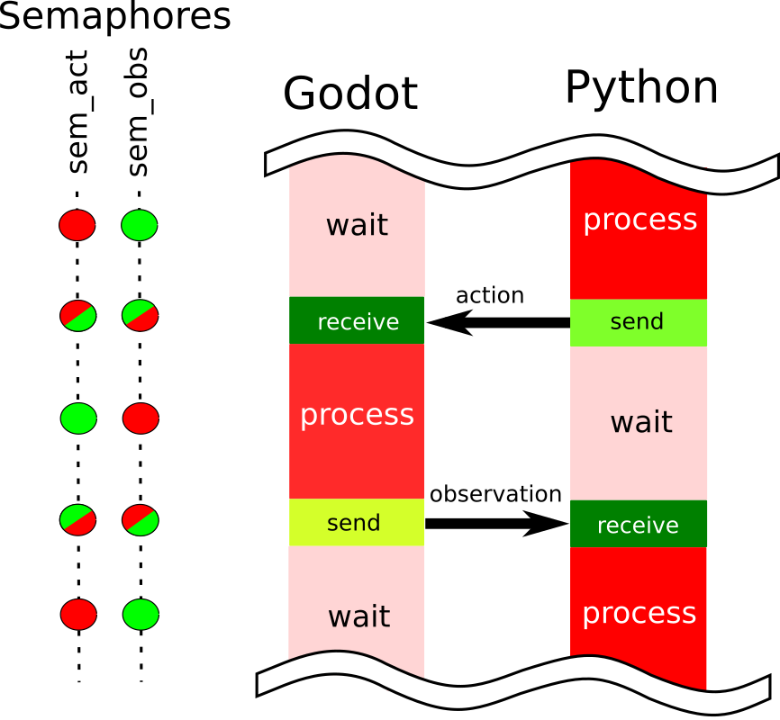
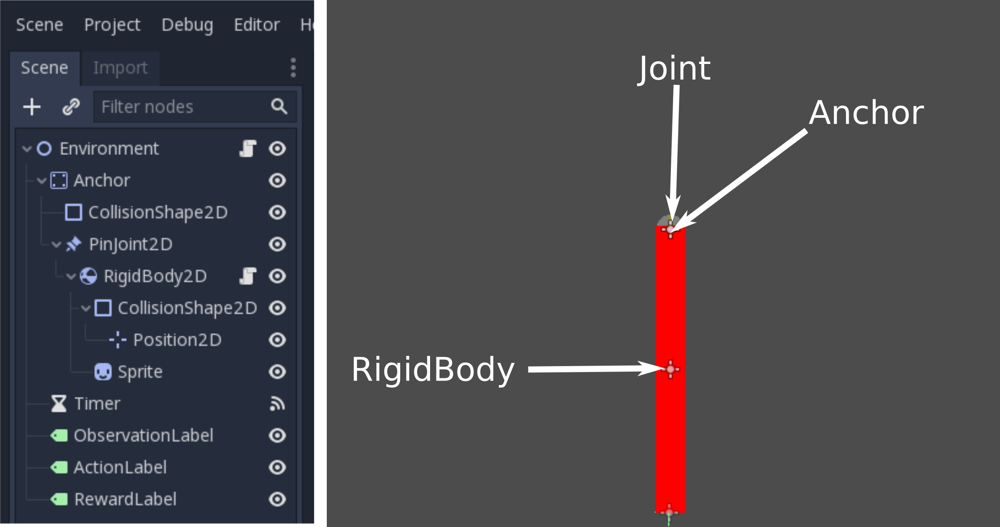
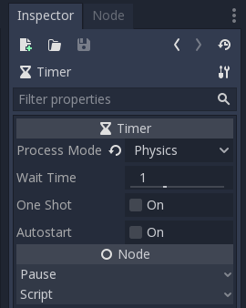
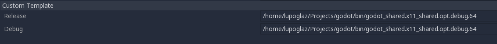

Basic tutorial
Introduction
When training reinforcement learning agents, the agent interacts with the environment by sending actions and receiving observations. The agents are trained in a python script and the environment is implemented using Godot.In python the environment is wrapped into a class, that is usually similar to OpenAI Gym environment class (Code 1). We need to implement the functions: init, step, reset and close to get fully functional environment.
The init function launches subprocesses associated with your environment. In our case it launches Godot project as a subprocess.
The step function takes an action tensor that was sampled from your model and passes it to the environment. It then computes the next state and returns the observation of this state along with the reward. The variable done is true if the new state is the final one, false otherwise.
The reset function returns the environment to the initial state and returns the observation of this state.
The close function closes all subprocesses associated with your environment.
We will ignore seed and render functions for now, because we use random number generator in Godot and rendering is done by default.
Code 1: Dummy implementation of an OpenAI Gym class.
class DummyEnv(gym.Env):
def __init__(self):
pass
def seed(self, seed=None):
pass
def step(self, action):
return observation, reward, done, info
def reset(self):
return observation
def render(self, mode='human'):
pass
def close(self):
pass
Training cycle
The training cycle for a reinforcement learning agent looks something like this (Code 2):we collect samples until we observed n_rollout states, these observations along with actions and rewards are collected in the batch.
Then the model does one gradient step, empties its batch and resumes simulation. During the simulation, all the actions are sampled from the model itself.
Code 2: Dummy code for training an agent.
env = DummyEnv()
for i in range(num_epochs):
done = 0
while done == 0:
for t in range(n_rollout):
a = model.sample()
s_prime, r, done, info = env.step(a)
model.put_data((s, a, r, s_prime, done))
s = s_prime
if done:
break
model.train_net()
env.reset()
env.close()
Figure1: Synchronization diagram between python script and the environment.
Synchronization in Python
Figure 1 shows the pattern of interaction between python and godot processes. First, python script samples an action from the model, meanwhile the godot process waits for the action to be passed. In this case semaphore sem_act is blocked, while sem_obs has green light.When the step function is called the action tensor is sent into the shared memory and sem_act semaphore turns green. It signals to godot to start processing the action of an agent. Meanwhile the semaphore sem_obs turns red, blocking python process while waiting for godot to send the observation.
In Godot we have to put synchronization procedures in a _physics_process if we have physics-based environment. In other cases we can use standard _process function.
Code 3: Introducing semaphores.
class DummyEnvSemaphores(gym.Env):
def __init__(self, num_actions, num_observations):
self.mem = _GodotEnv.SharedMemoryTensor("environment")
self.sem_act = _GodotEnv.SharedMemorySemaphore("sem_action", 0)
self.sem_obs = _GodotEnv.SharedMemorySemaphore("sem_observation", 0)
#Shared memory tensors
self.agent_action_tensor = self.mem.newFloatTensor("agent_action", num_actions)
self.observation_tensor = self.mem.newFloatTensor("observation", num_observations)
def seed(self, seed=None):
pass
def step(self, action):
#sending action
self.agent_action_tensor.write(action)
self.sem_act.post()
self.sem_obs.wait()
#receiving observation
observation = self.observation_tensor.read()
return observation, reward, done, info
def reset(self):
return observation
def render(self, mode='human'):
pass
def close(self):
pass
Figure 2: Scene organization
Figure 3: Timer properties
Synchronization in Godot
Godot scene contains a pendulum consisting of StaticBody2D, PinJoint2D and RigidBody2D. Moreover, it has the Timer, synchronized with the physics server that counts down the time between an action received and an observation sent.The Timer properties are shown on the Figure 3. To synchronize the time with the physics server set the Process mode to Physics. Code 4 shows the important bits of synchronization code in godot. The semaphores and shared memory are initialized in the _ready function. If the shared memory exists, the project was called from python script, otherwise no semaphores needed. This lets us to run the project in the editor to debug it. Because we use phyics engine to model the environment, we also synchronize updates with the physiscs server using _physics_process.
The engine waits for the actions in the function _physics_process and starts Timer count down.
When the Timer returns the signal _on_Timer_timeout we send the observation back to python and release the semaphore sem_obs. Also, we signal to the engine, that we wait for the next action by setting timeout variable to true.
Code 4: Environment node script
var deltat = 0.1
var agent_action_tensor
var observation_tensor
func _ready():
mem = cSharedMemory.new()
if mem.exists():
sem_action = cSharedMemorySemaphore.new()
sem_observation = cSharedMemorySemaphore.new()
sem_action.init("sem_action")
sem_observation.init("sem_observation")
#Shared memory tensors
agent_action_tensor = mem.findFloatTensor("agent_action")
observation_tensor = mem.findFloatTensor("observation")
set_physics_process(true)
func _physics_process(delta):
if timeout:
if mem.exists():
sem_action.wait()
#receiving action
agent_action = agent_action_tensor.read()
$Timer.start(deltat)
timeout = false
func _on_Timer_timeout():
if mem.exists():
#sending observation
observation_tensor.write(observation)
sem_observation.post()
timeout = true
Resetting the environment
When the episode of the simulation ends we want to reset the environment to the initial position without relaunching the engine process. To accomplish this feat we use additional action, that is 1 if the environment should be reset and 0 otherwise. However, the tricky part is resetting the positions and velocities of the objects in Godot.In our case we have one physics object: RigidBody2D. The positions and velocities of the RigidBody2D node can be changed only in the _integrate_forces function of this node. Therefore we introduce the variable reset, which is true when we want to reinitialize this node and false otherwise. Additionally we create variables to store initial positions and velocities of this node.
The Code 5 shows the gist of this function. First we compute absolute initial Transform2D of the node and change the state accordingly.
Unfortunatelly, we have to compute the transforms of Anchor and PinJoint2D in the Environment script (Code 6). Probably, one can avoid this cumbersome procedure by reorganizing the tree or accessing the parent nodes from the RigidBody2D itself.
Code 5: Resetting the state of the RigidBody2D
func _integrate_forces(state):
if reset:
var T = Transform2D(0.0, init_anchor)
var Tt = Transform2D(0.0, -init_anchor)
var R = Transform2D(rng.randf_range(-PI, PI), Vector2(0,0))
var v = Transform2D(init_rotation, init_origin)
state.set_transform(T*R*Tt*state.transform)
state.set_angular_velocity(init_angular_velocity)
state.set_linear_velocity(init_linear_velicity)
reset = false
Code 6: Initial positions of the RigidBody2D from Environment node
func _ready():
var v = $Anchor/PinJoint2D/RigidBody2D.transform.get_origin()
var AnchorT = $Anchor.transform
var JointT = $Anchor/PinJoint2D.transform
$Anchor/PinJoint2D/RigidBody2D.init_anchor = AnchorT.xform(JointT.get_origin())
$Anchor/PinJoint2D/RigidBody2D.init_origin = AnchorT.xform(JointT.xform(v))
$Anchor/PinJoint2D/RigidBody2D.init_rotation = 0.0
$Anchor/PinJoint2D/RigidBody2D.init_angular_velocity = 0.0
$Anchor/PinJoint2D/RigidBody2D.init_linear_velicity = Vector2(0.0, 0.0)
Figure 4: Exporting Godot project
Exporting the project
We tested this library using debug exporting templates. Just follow the standard godot export procedure and everything should just work.Code 7 shows how the environment is launched from the python class: we use subprocess package and pass the special handle to the environment so that it can access the shared memory allocated by python. We have to note, that it is important to redirect stdout and stderr streams to files instead of pipes. We found out that using pipes makes semaphores stuck in an impossible combination. To correctly close the environment process upon termination of the python script we use the atexit package to register the close function, that terminates the process. This approach works in case of termination of the python script due to errors as well as manual signals.
Code 7: Launching the exported environment
class DummyEnvLaunch(gym.Env):
def __init__(self, exec_path, env_path):
with open("stdout.txt","wb") as out, open("stderr.txt","wb") as err:
self.process = subprocess.Popen([exec_path, "--path",
os.path.abspath(env_path),
"--handle", self.handle], stdout=out, stderr=err)
atexit.register(self.close)
def close(self):
self.process.terminate()
Conclusion
In this tutorial we showed the first step to make your own environment in Godot Engine and use it from python script. Right now the godot environment runs in the real time. In the next tutorial we will show how to speed it up. The fully functional code for this tutorial can be found here:Tutorials
The Godot project is located in the directory InvPendulum and the python Gym class is in the file InvPendulum.py.